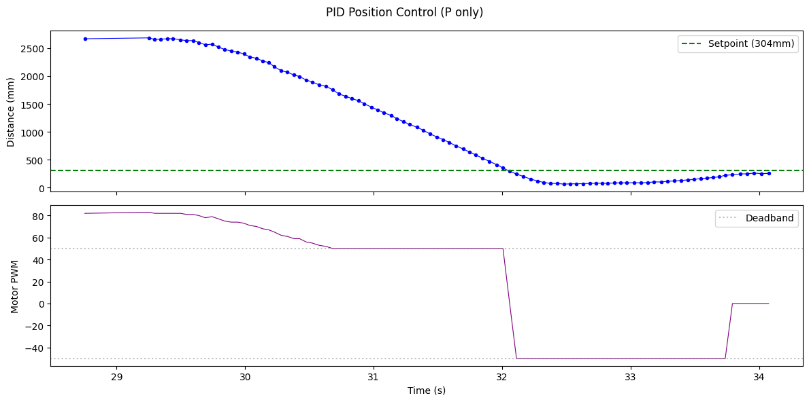
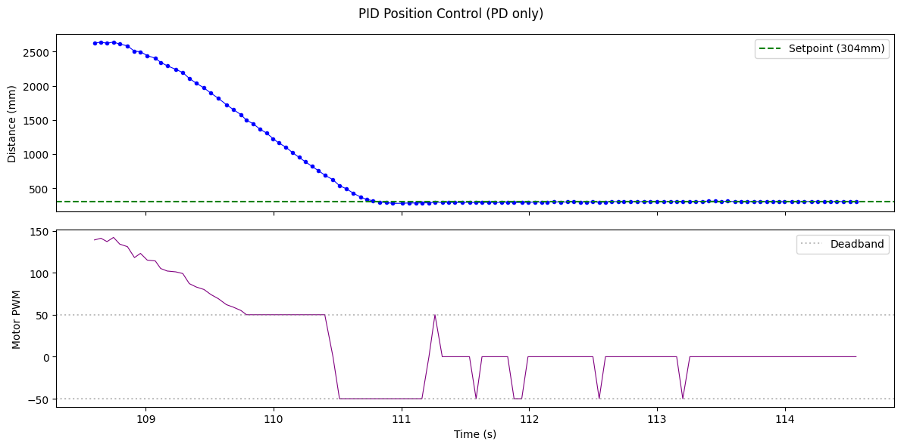
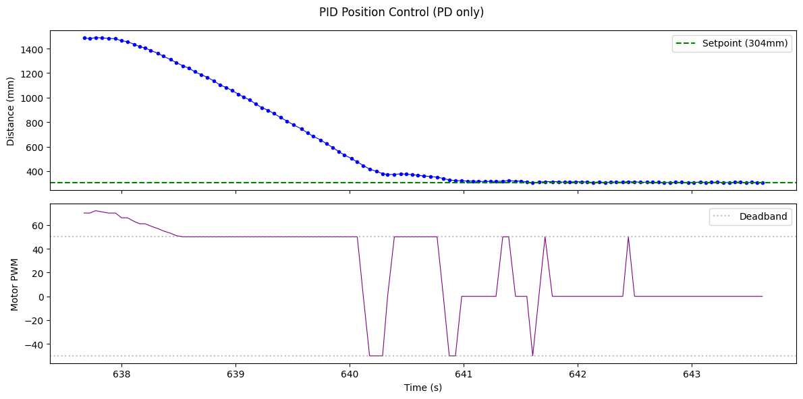
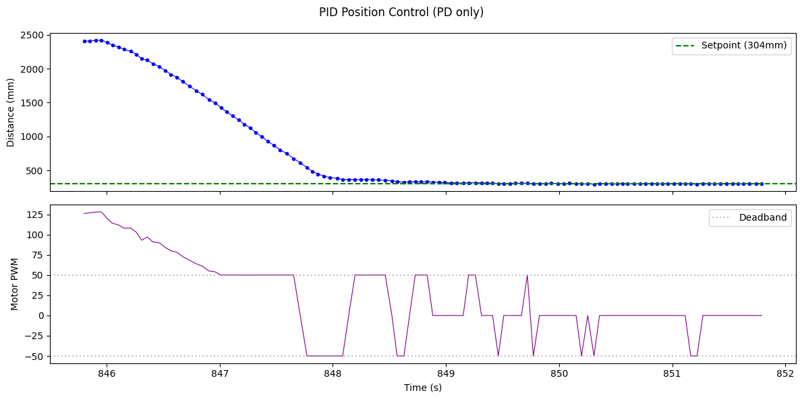
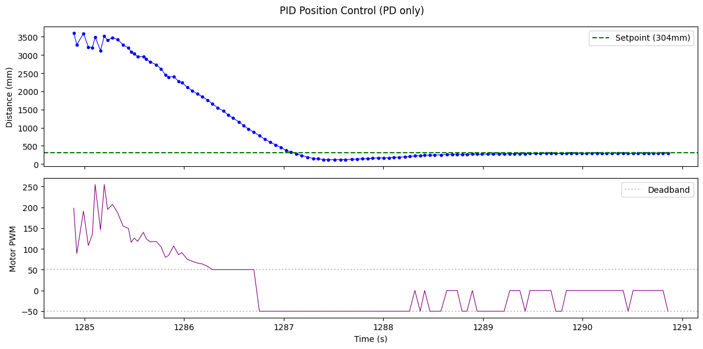
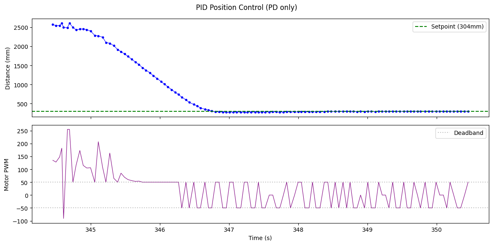

Prelab
BLE Infrastructure
The control loop is triggered wirelessly: a PID_START command from the laptop sets a pid_running flag and records the start time. On the Artemis, the main loop checks this flag and calls runPID() every iteration when active. A hard safety timeout (configurable, default 5-6.5s) brakes the motors automatically regardless of BLE connection status. Three new BLE commands were added:
| Command | ID | Description |
|---|---|---|
PID_START | 16 | Starts PID run, resets log arrays, records start time |
GET_PID_LOG | 17 | Sends timestamped ToF + motor data over BLE |
SET_PID_GAINS | 18 | Updates Kp, Ki, Kd wirelessly without reflashing |
On the Python side, a notification handler parses incoming pipe-delimited strings (T:<ms>|TOF:<dist>|MOT:<pwm>) into arrays for plotting. Gains can be updated between runs without reflashing:
ble.send_command(CMD.SET_PID_GAINS, "0.06|0|0.017")
time.sleep(1)
ble.send_command(CMD.PID_START, "")Debugging Setup
All PID logic lives in a dedicated pid.h/pid.cpp module, keeping main.ino clean. Sensor data, timestamps, and motor commands share the same circular buffer and index as the normal logging mode. The buffer was upgraded from 150 to 1000 entries for PID plotting and tuning (may be decreased in later labs). After each run, GET_PID_LOG sends the full buffer over BLE for analysis. Two-panel plots (distance vs. time, motor PWM vs. time) were the primary debugging tool throughout tuning.
Lab Tasks
PD Controller Design
A PD controller was chosen for position control (4000-level). The target is 304mm (1 floor tile) from the wall, measured by the front-facing VL53L1X ToF sensor. The control law:
P_term = Kp * error
D_term = Kd * filtered_derivative(error)
motor_cmd = P_term + D_term // clamped to [-255, 255]
The P term drives the car toward setpoint proportionally to distance. The D term brakes as error shrinks rapidly, preventing overshoot. A low-pass filter (alpha = 0.5) smooths the derivative to avoid amplifying ToF noise (~2-3mm jitter). We decided not to use an integral term in our controller, as the PD controller seemed to settle within ~10mm of setpoint.
Gain Tuning
Tuning was done empirically, starting P-only and layering D on top:
Step 1: P only. Starting at Kp = 0.02 (very slow approach), the gain was increased until overshoot appeared. At Kp = 0.035, the car reached 304mm but overshot to ~100mm before recovering.

Step 2: Add D. With Kp = 0.06 (faster approach), Kd was tuned starting from 0.1 (way too high, caused violent jitter) down to 0.017, which provided smooth braking without sluggishness. Higher Kd values caused the D term to overpower P during approach, actually reversing the car before it reached setpoint.

Range & Sampling Time
The ToF sensor runs in Long mode with a 50ms timing budget, chosen for lower absolute error (+0.3 to +11.4mm) over Short mode based on Lab 3 testing. This produces readings at ~20Hz. The PID loop runs at ~125Hz (~8ms per iteration, measured) with no blocking calls; checkForDataReady() polls non-blocking and returns -1 when no new data is available.
Deadband Handling
From Lab 4, the motors require a minimum of ~50 PWM to overcome static friction on tile. PID outputs below this threshold are bumped up to the deadband minimum:
if (motor_cmd > 0 && motor_cmd < MOTOR_MIN_PWM) motor_cmd = MOTOR_MIN_PWM;
if (motor_cmd < 0 && motor_cmd > -MOTOR_MIN_PWM) motor_cmd = -MOTOR_MIN_PWM;This creates a discontinuity at the setpoint where the motor jumps between +50, 0, and -50 PWM. The D term damps most of this jitter, but the high deadband threshold contributes to worse oscillation near setpoint since the motor is either at 50 PWM or off entirely. With better low-speed motors (lower deadband), the PWM output would be smoother and easier to tune in our case.
Position Control Results
Final gains: Kp = 0.06, Kd = 0.017. The controller was tested from three starting distances to demonstrate robustness. Maximum linear speed during the 2.5m run was approximately 1.4 m/s, computed from the steepest slope in the ToF data (~700mm drop in 0.5s).



Start: ~3500mm. Overshoots to ~150mm due to higher approach velocity, recovers within ~1s.
Three successful runs recorded on video:
Run from ~3.5m
Perturbation Recovery
With the PID running and the car settled at setpoint, external pushes in both directions were applied. The car returns to 304mm after each perturbation, demonstrating closed-loop robustness:
Linear Extrapolation
Implementation
The ToF sensor returns new data every ~50ms, but the PID loop runs every ~8ms (measured). To decouple these rates, a linear extrapolation estimates distance between real readings using the slope from the last two measurements:
estimated_distance = reading_new + slope * (now - time_new)
A 200ms safety cap prevents runaway extrapolation if the sensor stops updating. The PID now computes a motor command every loop iteration rather than only on fresh ToF readings, increasing the effective control rate from ~20Hz to ~125Hz.
if (new_tof) {
// Update extrapolation state with real reading
extrap_dist1 = extrap_dist2;
extrap_time1 = extrap_time2;
extrap_dist2 = (float)tof1_array[index];
extrap_time2 = now;
extrap_count++;
if (extrap_count >= 2) {
extrap_slope = (extrap_dist2 - extrap_dist1)
/ (float)(extrap_time2 - extrap_time1);
}
distance = extrap_dist2;
} else if (extrap_count >= 2) {
// Extrapolate between real readings
float time_since = (float)(now - extrap_time2);
if (time_since < 200.0)
distance = extrap_dist2 + extrap_slope * time_since;
else
distance = extrap_dist2;
}D Term Tradeoffs
An important finding: running the D term on extrapolated data caused severe instability. With extrapolation, the system makes many micro-adjustments every loop (~8ms), and the derivative amplified these into wild motor swings. The side-by-side comparison below shows this clearly. We believe the slower sampling rate (~50ms) actually works in our favor with the noisy ToF data, making the D term less sensitive to minor changes. Gains tuned for 50ms were far too aggressive at 8ms.

The solution was to compute D only on real ToF readings while letting P use the extrapolated distance every loop. Between real readings, the D term holds its last filtered value rather than recomputing. This gives the P term fast responsiveness from extrapolation while keeping D stable and noise-free. Biggest insight is that more frequent data is not always better when a controller branch amplifies noise.
Potential Improvements
Several improvements could further refine the controller:
- Active braking in D term: Currently the motors coast when PID output crosses zero. Using
brakeMotors()(both H-bridge pins HIGH) at low error deltas would stop the car much faster than coasting through the deadband. This would be especially effective near setpoint where the car drifts back and forth between +50 and -50 PWM. - Variable timing budget: Lowering the ToF timing budget during fast approach (e.g. 20ms for faster updates) and switching to 50ms near setpoint (for accuracy) could improve both responsiveness and steady-state precision.
Acknowledgements
Claude AI was used throughout this lab for assistance with PID controller design and implementation, gain tuning strategy, linear extrapolation implementation, debugging BLE data transfer, and structuring this lab report. All hardware assembly, testing, data collection, gain tuning, and video recording were done by me.